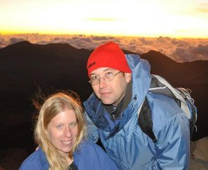

Most recently, I have delved into the wizarding world of web development and Ruby on Rails. I am currently attending Dev Bootcamp in San Fransisco and seeking full time employment or contract work beginning in June of 2014. If you happen to find yourself here as a potential client or employer, WELCOME! I am excited to bring my experience to your organization, learn from you and create cool things with you!
For the past eight years, I have worked at a great company named Sundog where I was able to help create value as the Senior Support Coordinator. At Sundog, I really was able to dig into a wide variety of experiences and technologies. My experiences include a range that spans from blogging about My Little Pony to managing technical projects to runing Java releases. My position required both an ability to interact with clients as well as an ability to work with and discuss problems with software engineers and web developers. I have been fortunate enough to be a part of this company that has been listed on the Forbes 5000 and listed by Ad Age as one of the best companies to work for in the US. Mostly, I have gained oodles of experience and a lifetime of friends at Sundog.
I am also a combat military veteran with seven years in the North Dakota Army National Guard. This experience helped teach me dedication and expand my horizons both geographically and in terms of real world living conditions for many people. Having brief glimpses into poverty and the effects of war can really make a person be grateful for the world around them.
Speaking of which, I am MOST grateful to be married to my lovely wife Ashley. We have three cats and they all have some names I hear, but I call them all "cat." I am a dog lover myself and hope to get another dog as soon as I can get established somewhere.

We enjoy traveling together and look forward to our new life and experiences on the west coast! It will be nice to be closer to my mother (who is in San Diego) and to be closer to all of the things that West Coast living can bring. I will certainly miss the Silicon Prairie that Fargo, ND has become.... but I am ready to try something different.
In my free time, I author books like Fifty Shades of Bacon, homebrewing, cooking, traveling and finding fun things to do on the internet